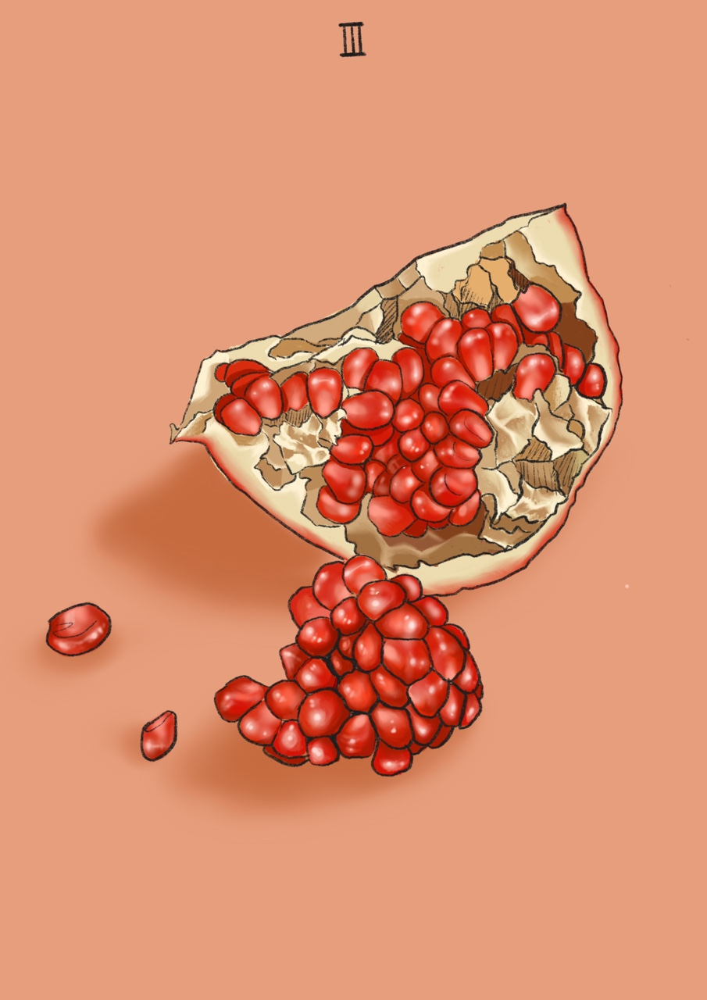

The empress
모성적 체험, 자연과의 동화, 생명에 대한 신뢰, 자연의 지혜, 내적인 안정, 무조건 적인 사랑, 현명함, 현실감, 인내, 관용, 정체함, 무정함, 둔감함.
이것은 단지 육체적인 임신이나 출산, 보육을 의미하는 것이 아니라, 태모의 내적 체험을 듯한다. 그것은 육체를 소중히 돌봐야 할 귀한 것으로 인식하고,
자연과 동화하고 자연의 생명에 뿌리를 두고, 일상적 존재의 단순한 기쁨과 감각에 감사하는 것이다.
우리 안에 이러한 태모가 없다면 어떤 결실도 거둘 수 없다.
전히 지성적 세계 속에서 살아가게 될 것이다.
아이들은 어머니를 통해 안정감, 생명에 대한 신뢰를 경험한다. 이처럼 여왕의 이미지는 내적인 안정감, 현실적 안전과 연결된다. 그녀는 현명하다. 그러나 우리가 흔히 머리로만 생각하는 식이 아니라, 자연의 지혜를 갖고 있다.
데메테르는 태모일 뿐만 아니라 슬픔의 어머니이기도 하다. 따라서 그녀는 자신의 소유를 포기하지 못한 채, 자신의 안락한 세계에 혼란을 일으키는 침입자에 대해 복수를 한다.
이 슬픔의 어머니는 삶의 변화를 요구하고, 이별과 끝을 맞이하게 되면 비탄과 분노로 가득 차게 된다.